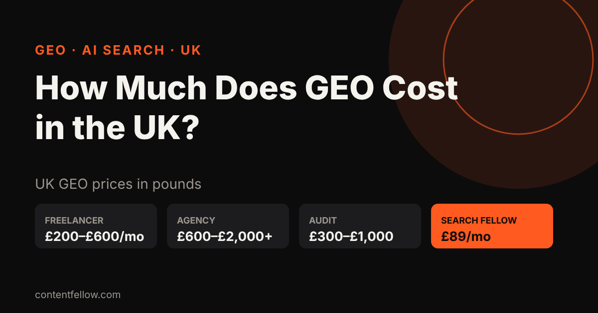
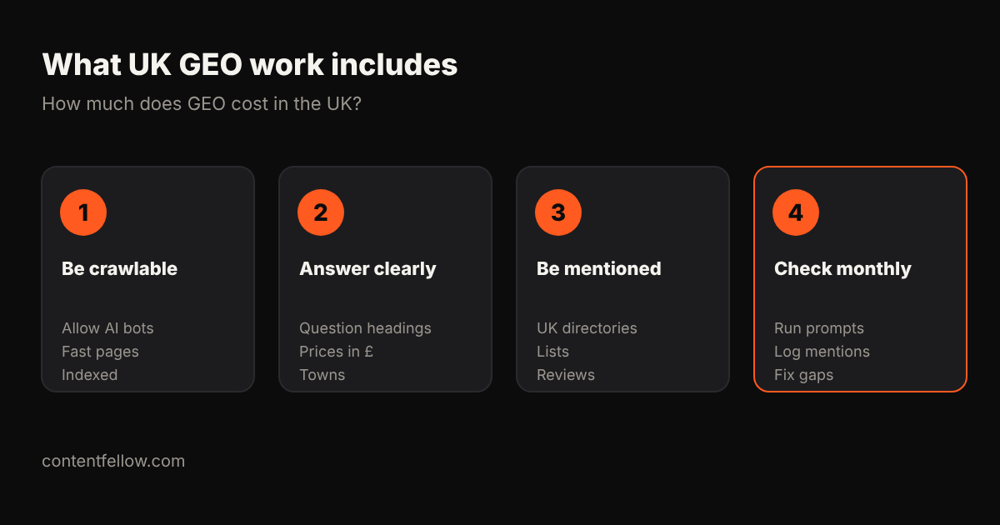

How Much Does GEO Cost for a Small Business in the UK? (2026)
How much does GEO cost for a small business in the UK?
Quick answer: GEO (generative engine optimisation) for a UK small business costs £200–£600 a month from a freelancer and £600–£2,000+ a month from an agency. ContentFellow's Search Fellow does SEO and GEO together for a fixed £89 a month, no contract. (Updated October 2026.)
TL;DR: Most UK small businesses need £89–£600 a month of GEO: clear answer pages, structured data, mentions on trusted UK sites and a monthly check of what ChatGPT, Gemini and Perplexity say about you.

UK GEO prices (2026)
| Option | Typical UK price | Best for |
|---|---|---|
| DIY | £0 + your time | Very small budgets |
| One-off AI visibility audit | £300–£1,000 | Seeing where you stand |
| Freelancer | £200–£600/month | One location, simple site |
| Agency | £600–£2,000+/month | Multi-site or national brands |
| ContentFellow Search Fellow | £89/month | UK small businesses (SEO + GEO) |
Many big "GEO cost" guides quote US dollars. These are UK prices in pounds.
What does GEO work include?
- Let AI crawlers read your site (robots.txt, fast HTML, llms.txt).
- Answer real questions in headings, with prices in £ and your towns.
- Add structured data (Organization, LocalBusiness, FAQ).
- Get mentioned on trusted UK sites: directories, "best of" lists, reviews.
- Check prompts monthly in ChatGPT, Gemini, Claude and Perplexity, then fix gaps.

Is GEO worth it for a small UK business?
Yes, if customers ask AI tools for recommendations in your sector. Start small, track which prompts mention you, and only scale up when you see results.
FAQ
Is GEO more expensive than SEO?
No. In the UK they cost about the same. Most work overlaps, so one plan can cover both.
How long does GEO take to work?
Usually 4–12 weeks for AI tools to start mentioning you, faster if you already rank on Google.
Can I do GEO myself?
Yes, the basics: clear prices, FAQ pages, Google Business Profile and reviews. Monthly prompt checks take longer.
What does ContentFellow charge for GEO?
Search Fellow is £89 a month for SEO + GEO with a monthly AI visibility report. No contract.
Talk to us: call or WhatsApp 07535 677302, email info@contentfellow.com. Need a site that AI can read? See pay monthly websites from £225 (code GhostFellow7 = 25% off builds). · All prices · Answers
Sources: ContentFellow prices from contentfellow.com/pricing/ (October 2026); market ranges are typical UK agency and freelancer quotes checked October 2026. Last updated 26 October 2026.